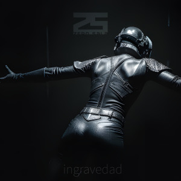

ingravidad [Álbum 01]
2026 — Reverberación consecuente
Primer registro dentro de Zero Sala: una masa sonora sostenida donde el origen pierde relevancia y el sonido se convierte en presencia. No hay composición en el sentido tradicional, sino acumulación, permanencia y deriva.
El material no evoluciona, se dilata. Las capas no se organizan en estructura, sino que se superponen hasta generar un estado continuo. No hay narración ni progresión: solo una ocupación progresiva del espacio.
Las fuentes —máquinas, residuos sonoros, fragmentos deformados— dejan de ser identificables. El sonido no representa nada, no describe nada. Se limita a persistir.
No es un álbum. Es un volumen en suspensión. Un estado acústico que permanece incluso cuando deja de escucharse.